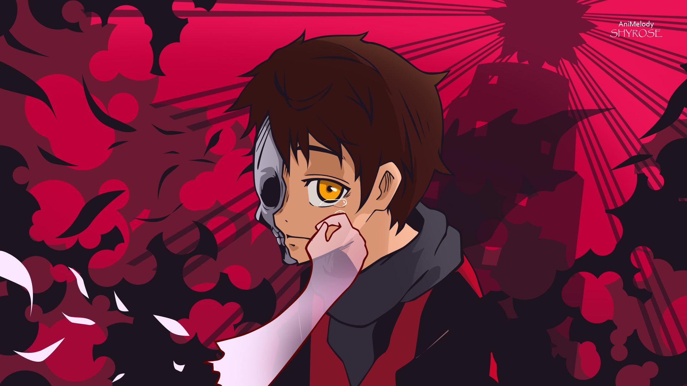
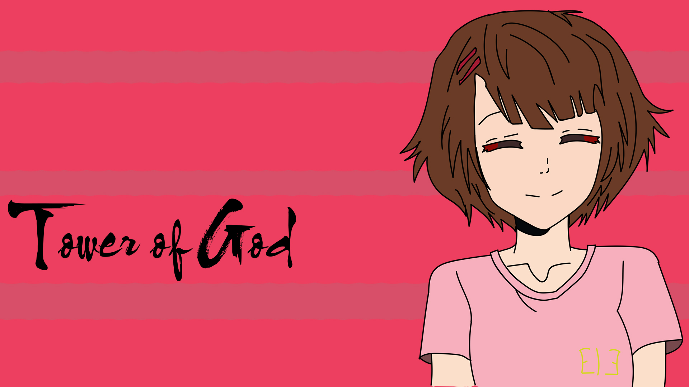
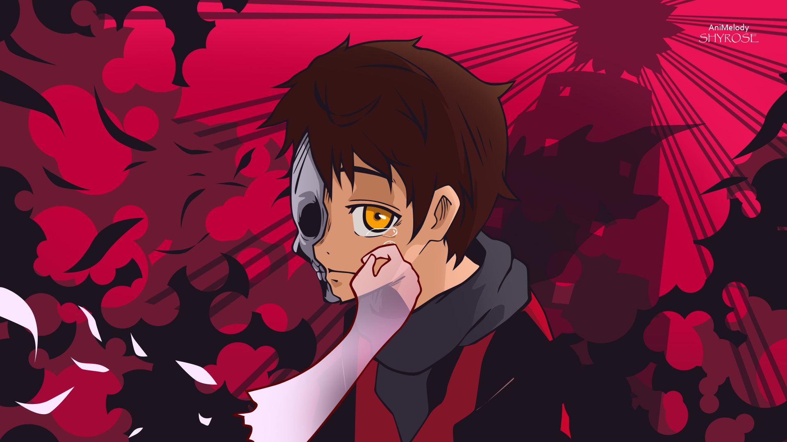
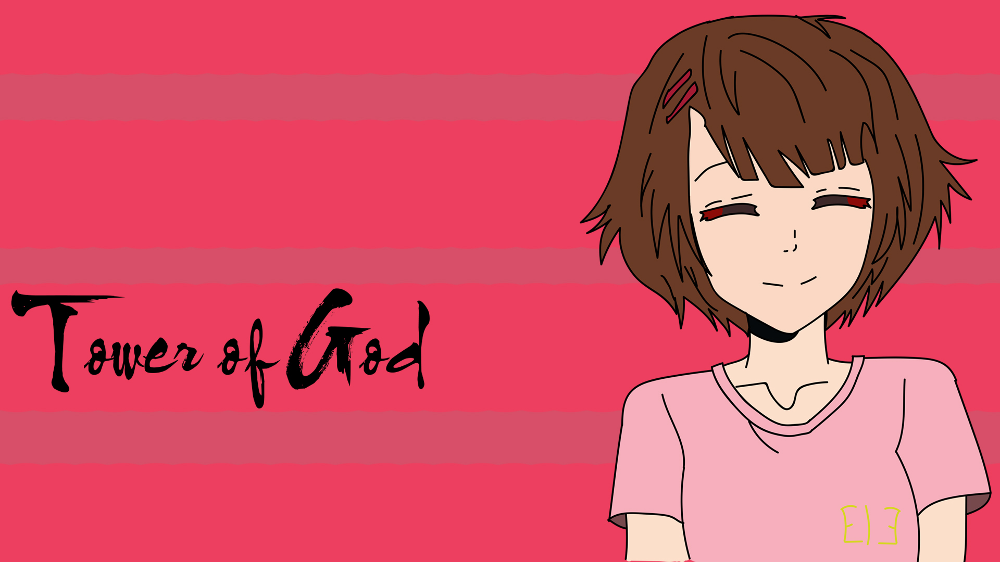
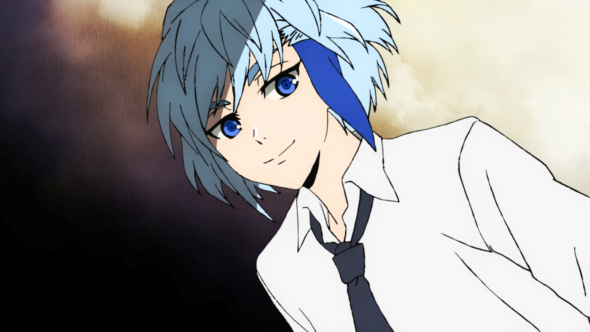
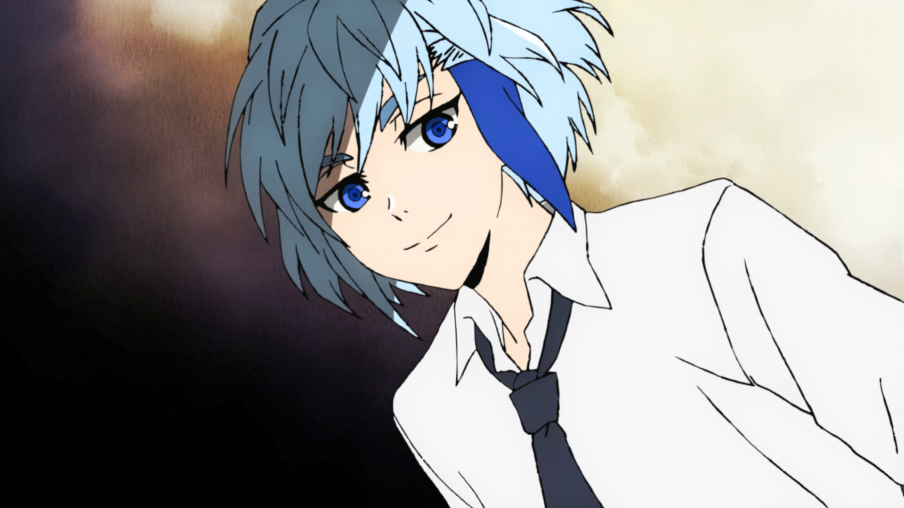

 



tower of god
tower of god, é um anime que tem a torre de deus que os personagens podem subir, e quando chegar na torre voce pode descobrir a verdade do mundo e fazer qualquer desejo.
Bam
Bam é um garoto puro e inocente que passou um bom tempo preso em um lugar recluso acompanhado de uma garota chamada Rachel. Após o desaparecimento dela, o protagonista decide encarar os desafios da tal Torre de Deus para reencontrar a sua amada.
endorsi
Androssi, sendo uma Princesa Zahard, era extremamente poderosa para uma Regular.[8] Acima de todos os seus colegas, ela ganhou o lugar como a Regular mais forte de todos eles. Após o teste Esconde-Esconde, ela começou a receber elogios como alguém que lutou em terreno plano contra um Ranker
Navio Leesoo
Ele é relativamente fraco, mas possui uma grande capacidade de deduzir e um intelecto em pé de igualdade com Khun. Ele passou por todos os testes no Segundo Andar, onde foi designado para a posição Explorador e agora está subindo a Torre como o líder de sua equipe. Ele está atualmente no 52º Andar.
khun
Ele é um dos muitos "filhos descartados" de Khun Eduan. Ele foi expulso da família porque sua irmã mais velha falhou em se tornar uma das Princesas de Zahard. Ele se uniu a Baam e Rak e passou vários testes com eles. Ele foi designado para a posição Portador de Luz e mostrou um talento claro em campo.
yuti azhard
Yuri Zahard é uma personagem poderosa e carismática em Tower of God. Ela é uma das princesas de Zahard, um título concedido a mulheres excepcionais que recebem o poder do Rei Zahard. Yuri é conhecida por sua força impressionante e habilidades de combate excepcionais.
Ja Wangnan
Ele é inicialmente apresentado como um jovem aparentemente fraco e inexperiente, mas ao longo da história, revela ser mais complexo e determinado do que parece. Wangnan tem uma personalidade carismática, amigável e às vezes ingênua, mas também possui um forte senso de justiça.